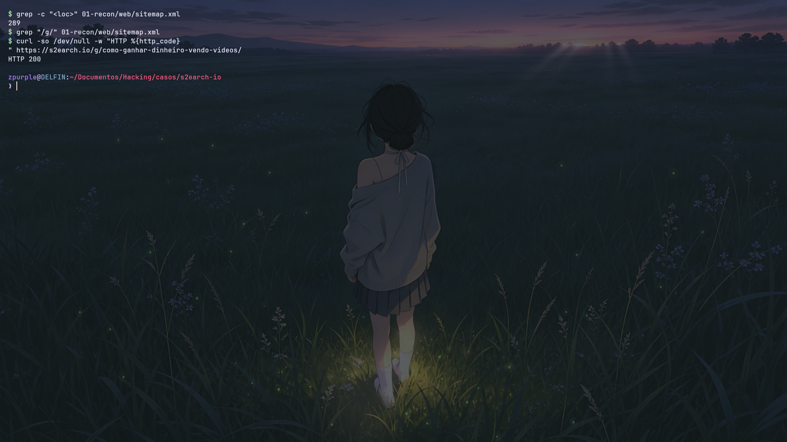
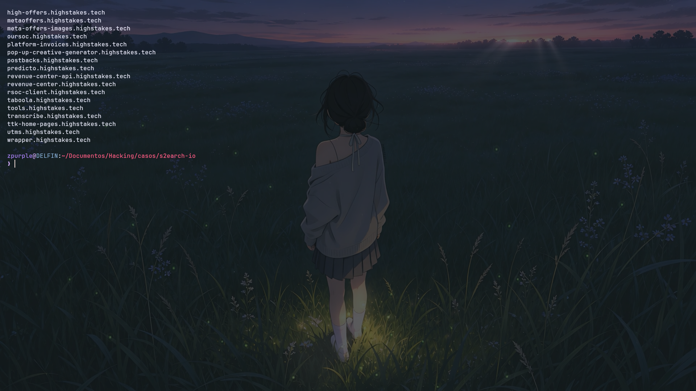
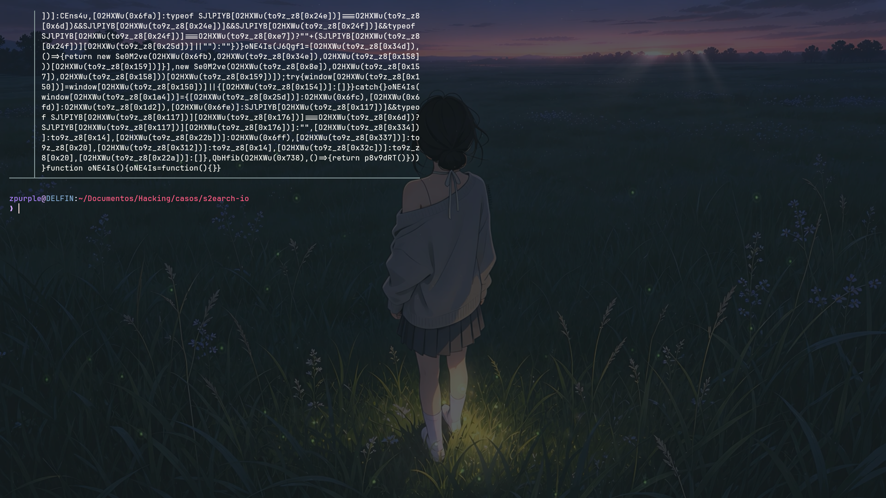

Desmantelando una red de ad-fraud
Un anuncio de YouTube que prometía "ganar dinero viendo videos" terminó destapando una operación de arbitraje publicitario de 17+ sitios en 10 idiomas. Rastreo de infraestructura, ingeniería inversa y entity resolution hasta la empresa que lo financia — todo con fuentes públicas.

01 El problema
Un sitio (s2earch.io) se anunciaba como plataforma para "ganar dinero viendo videos". No existía ningún mecanismo de pago: era una granja de contenido Made-For-Advertising que compra tráfico con anuncios engañosos y lo monetiza con Google AdSense. El usuario no gana — el usuario es el producto.
02 Método (OSINT · reconocimiento pasivo)
Infraestructura
WHOIS/RDAP, DNS, Certificate Transparency y urlscan para mapear dominios hermanos y el backend del operador.
Ingeniería inversa
Análisis del wrapper de anuncios ofuscado: endpoints de cloaking, detección de bots (Adscore) y las 1302 reglas.
Ad Intelligence
Google Ads Transparency Center para identificar al anunciante verificado y las campañas de video activas.
Entity resolution
Del dominio anónimo → anunciante verificado → empresa registrada (registro mercantil público).
03 Hallazgos clave
- Páginas-cebo ocultas: landings
/g/fuera del sitemap, servidas con cloaking. - Monetización: Google AdSense inyectado en runtime por un wrapper por-dominio.
- Backend del operador ("High Stakes"): subdominios de compra de anuncios, arbitraje, RSOC y facturación, revelados vía CT.
- El anunciante: una empresa fachada verificada por Google (capital simbólico) comprando ~20.000 anuncios.
- Google en evidencia: verifica al anunciante, cobra por los anuncios y re-monetiza las landings con AdSense.



04 Resultado
Operación documentada de punta a punta y reportada de forma responsable a Google (AdSense/Ads), Cloudflare, el registrador y las autoridades competentes, con la evidencia y los indicadores para su takedown.